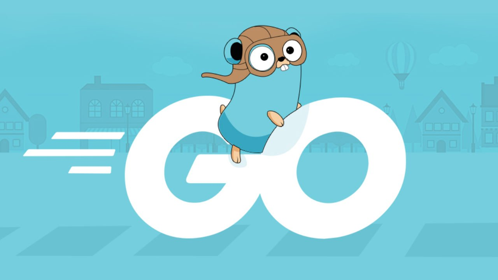
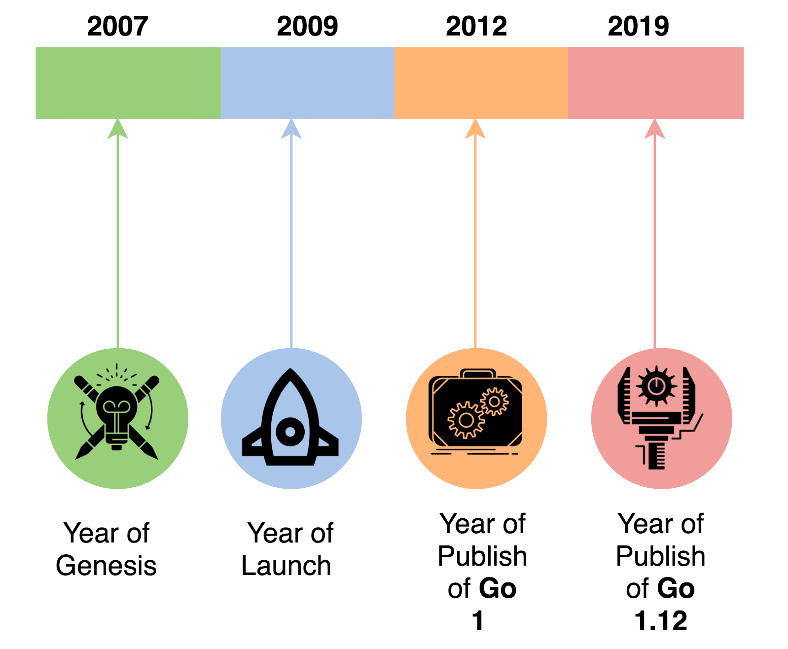

Go 语言简介

Go（有时也被称为：Golang）是一门新兴的程序设计语言，诞生于 2007 年，并于 2009 年正式对外发布。Go 是一门开源的程序设计语言，其初衷是为了让开发者可以更为方便地开发简单、可靠、高效的应用软件。Go 是一门静态类型编译型语言，静态类型意味着变量类型需要显式声明并在编译时刻确定，编译型语言则意味着程序执行前需要将源代码编译为平台相关的二进制机器码。Go 项目的领导者是三位鼎鼎大名的 IT 工程师：Robert Griesemer，Rob Pike，Ken Thompson。
- Robert Griesemer：参与开发 Java HotSpot 虚拟机。
- Rob Pike：贝尔实验室 Unix 团队成员，参与开发 Plan 9 操作系统和 Limbo 语言。
- Ken Thompson：贝尔实验室 Unix 团队成员，C 语言、Unix 和 Plan 9 操作系统创始人之一，与 Rob Pike 共同开发了 UTF-8 字符集规范。
Go 首次公开发布是在 2009 年，以 BSD 许可证开放源代码释出，支持 Unix、Linux、MacOS 平台，同年也增加了对 Windows 平台的支持。Go 1.0（首个生产可用版）于 2012 年 3 月发布，如今，Go 语言已经迭代到了 1.15 版本（2020 年 8 月），而 Go 2.0 也正在路上！

图：Go 语言时间线
Go 语言的设计目标
Go 的设计者们对 Go 语言的设计目标是希望可以将静态编译型语言的高效执行、类型安全与动态语言的快速开发结合起来，为开发者提供一门可以更为方便地开发简单、可靠、高效应用软件的现代程序设计语言。
另外，以下几个方面也是 Go 语言重点考虑的。
并发并行：为了更好地适应多核心、多处理器、分布式等现代软件开发的新趋势，Go 在语言层面提供了并发并行解决方案
Goroutine。编译速度：大型 C++ 项目编译速度过慢，Go 语言希望提供快速编译。
依赖管理：不同于 C/C++ 的头文件动态库依赖管理，Go 使用
package包组织管理依赖项。内存管理：内存问题（如：内存泄漏）长期困扰着 C/C++ 开发者，Go 将内存管理职责由开发者收归语言 Runtime ，提供快速高效的垃圾收集器。
反射机制：Go 支持运行时反射。
…
Go 语言特性
Go 大体上是一门过程式、结构化的程序设计语言，始终将并发性作重点考量。不同于 C++，Java，Go 没有类（Class）和继承（Inheritance）这些面向对象（Object-oriented）的语言特性，但 Go 也利用接口interface实现了多态性。开发团队期望构建一门清晰简洁、轻量高效的语言，减少不必要的复杂性（如：面向对象特性），从这个意义上讲，Go 可以被认为是一门“混合型”语言。
一些现代面向对象程序设计的特性在 Go 中被有意地舍弃了，Go 团队认为面向对象的有些特性过于臃肿，导致开发者构建起庞大的类型继承系统，拖慢程序的运行效率。以下特性在 Go 中被舍弃（有些也许会在未来版本中被支持）：
- 函数重载与运算符重载
- 隐式类型转换
- 类与继承
- 动态类型
- 动态代码装载与动态库
- 异常机制
- 泛型（未来可能支持）
- …
关于语言特性的取舍，Go 开发团队给出了一些自己的看法与见解，参看 Go 官方网站 FAQ 页面。
Go FAQ: https://golang.org/doc/faq
参考资料
- The Way to Go